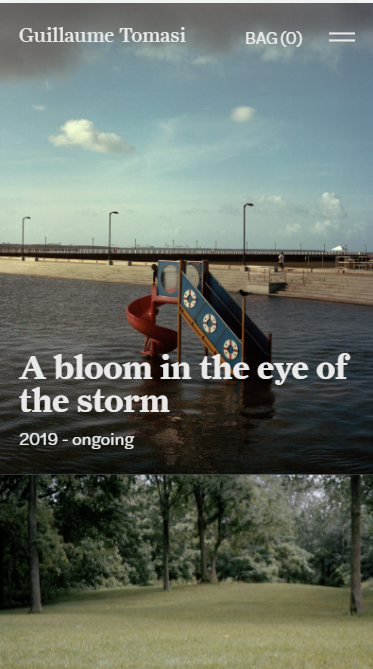
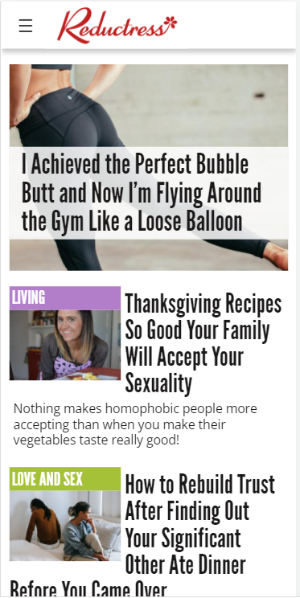

Rule of Thirds
Guillaume Tomasi
https://www.guillaumetomasi.com/
The Guillaume Tomasi website follows the rule of the thirds by having each picture take aproximately 2/3 of the page. This way, a picture is never taking more space then needed and there is a good balance between all the elements of the website. This way, it is easy to read and more simple.
Alignment
Reductress
https://reductress.com/
The articles are well aligned within their container boxes and within the page itself. They are balanced and well centered and organized as to be easy to read. The article images and text follow the same rulls.
Contrast
Swab the World
https://swabtheworld.com/en/
The Swab the World website exemplifies well the contrast design principles. The orange and blue colors wrok well together. They have a good contrast ration. One of the colors is even used for the background image from the main page, which makes everything fit together really well.